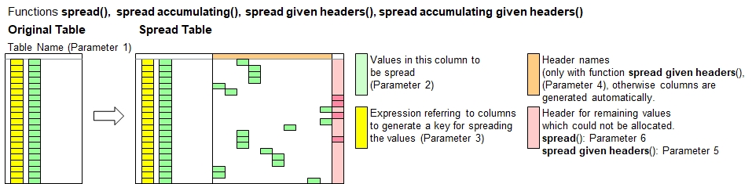

Function Names
table spread given headers, table spread given headers accumulatingDescription
These two functions are very similar to table spread() and table spread accumulating() with the only difference that
you specify the column header names directly which shall be included, and not more. This approach provides full control of the new
columns created, regardless of the data being spread horizontally.

If the destination colums are already existing, then the will be used. Otherwise, the new columns will be created.
The function table spread accumulating will add the new values to the existing value instead of overwriting it.
You can do multiple calls of this function on the same table.
Hint:To finalize a pivot from vertical horizontal, call table consolidate() as the net function to reduce the number of rows
to the minimum necessary.
Call as: procedure
Restrictions
Indirect parameter passing is disabled
Parameter count
4-6
Parameters
| No. | Type | Description |
|---|---|---|
| 1. input |
literal | Name of existing table |
| 2. input |
table columns | Column with values to spread Specify the column which contains the values or any other conetns you want to spread horizontally.
|
| 3. code |
expression :literal |
Spreading key expression Details: See table spread(), 3rd function parameter for details. |
| 4. input |
table columns | Destination Columns Specify all column header names for the data being spread. If it is years, then specify something like { '2020' .. '2025' },
noting that all values must be literal. No additional columns will be created automatically if certain values do not fit into the
given header names. However, they can be spread into the 'column for all other values' specified in the 5th function parameter.
|
| Opt. 5. input |
table column | Column for all other values This column will be used to allocate all values which cannot be allocate into the specified columns listed in the 4th function parameter.
|
| Opt. 6. input |
table column | Destination column Specify a header name or column number where to insert the new columns added. The specified column and further ones to the right will shift to the
right accordingly.
|
Return value
| Type | Description |
|---|---|
| numeral | Column count Number of new columns added. The 'column for other values' specified in the 6th function parameter is not included in the counting. |
Examples
// Remember the motor vehicles serialized ...
table initialize( bils, // Swedisch for 'cars', aka 'automo-bils'
{ { Product, "2020-Q1".."2020-Q4" },
{ Sedans, 24, 34, 44, 14 }, { Pickpus, 11, 21, 31, 21 },
{ Cabrios, '', 5, 10, '' }, { SUVs, 35, 25, 45, 55 } } );
echo("Car sales in sequential order (including blanks here):");
table serialize all( bils, Product, Quarter, { "2020-Q1".."2020-Q4" }, Cars sold );
table list ( bils );
echo("Let's add more values: One reservation, to demonstrate ...accumulating");
table insert columns( bils, Cars reserved );
[bils:Product,Sedans,Cars reserved] = 20;
// Specify 2 columns, and the 'Others' column to put all remaining data.
cols[] = {"2020-Q1", "2020-Q2"};
table spread given headers ( bils, Cars sold, [Quarter], cols[], Others );
table spread given headers accumulating( bils, Cars reserved, [Quarter], cols[], Others );
echo("Note the 44 sedans in 2020-Q1 (24 sold, 20 reserved)");
table list ( bils );
Output
Car sales in sequential order (including blanks here):
0 : Product | Quarter | Cars sold
1 : Sedans | 2020-Q1 | 24
2 : Sedans | 2020-Q2 | 34
3 : Sedans | 2020-Q3 | 44
4 : Sedans | 2020-Q4 | 14
5 : Pickpus | 2020-Q1 | 11
6 : Pickpus | 2020-Q2 | 21
7 : Pickpus | 2020-Q3 | 31
8 : Pickpus | 2020-Q4 | 21
9 : Cabrios | 2020-Q1 |
10 : Cabrios | 2020-Q2 | 5
11 : Cabrios | 2020-Q3 | 10
12 : Cabrios | 2020-Q4 |
13 : SUVs | 2020-Q1 | 35
14 : SUVs | 2020-Q2 | 25
15 : SUVs | 2020-Q3 | 45
16 : SUVs | 2020-Q4 | 55
Let's add more values: One reservation, to demonstrate ...accumulating
Note the 44 sedans in 2020-Q1 (24 sold, 20 reserved)
0 : Product | Quarter | Cars sold | Cars reserved | 2020-Q1 | 2020-Q2 | Others
1 : Sedans | 2020-Q1 | 24 | 20 | 44 | |
2 : Sedans | 2020-Q2 | 34 | | | 34 |
3 : Sedans | 2020-Q3 | 44 | | | | 44
4 : Sedans | 2020-Q4 | 14 | | | | 14
5 : Pickpus | 2020-Q1 | 11 | | 11 | |
6 : Pickpus | 2020-Q2 | 21 | | | 21 |
7 : Pickpus | 2020-Q3 | 31 | | | | 31
8 : Pickpus | 2020-Q4 | 21 | | | | 21
9 : Cabrios | 2020-Q1 | | | 0 | |
10 : Cabrios | 2020-Q2 | 5 | | | 5 |
11 : Cabrios | 2020-Q3 | 10 | | | | 10
12 : Cabrios | 2020-Q4 | | | | | 0
13 : SUVs | 2020-Q1 | 35 | | 35 | |
14 : SUVs | 2020-Q2 | 25 | | | 25 |
15 : SUVs | 2020-Q3 | 45 | | | | 45
16 : SUVs | 2020-Q4 | 55 | | | | 55
Try it yourself: Open REF_Function_table_spread_given_headers00.b4p in B4P_Examples.zip. Decompress before use.